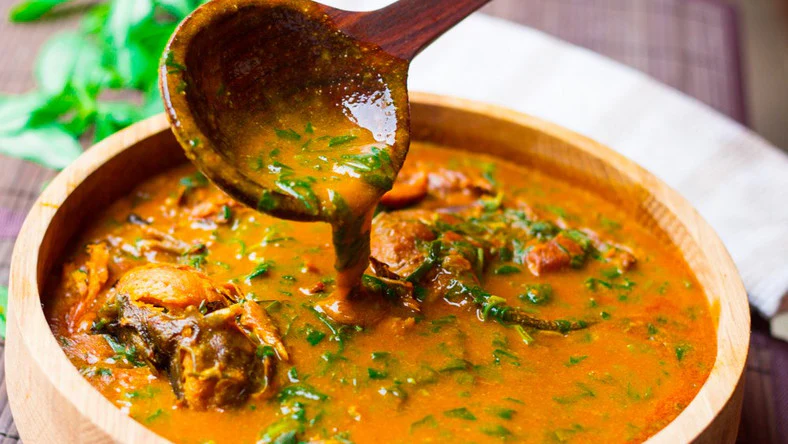

Odin Recipes
Ogbono Recipe

Ogbono Soup
When Ogbono is cooked it has a mucilaginous (slimy) texture like cooked Okra
and Jute leaves (Ewedu). This is a stew and not a soup in the real sense but
we call it soup anyways!
The beauty of making Ogbono soup is that you can make it all your own.
You can use fish in place of meat and you can also add or remove the extras
like the periwinkles.
Ingredients
- 1 Cup blended Ogbono or wild mango seed
- 4 Cups stock Beef or Chicken
- Meat Tripe, cow skin or Fish of choice
- 1 Cup Stock Fish
- Salt to taste
- 2 stock cubes
- ½ tablespoon Red Chili flakes or Cayenne pepper
- 1 tablespoon Crayfish ground
- Ugwu Kale or Collard Greens
- ¾ Cup Periwinkle
- ⅓ Cup Palm Oil
Steps
- Cut the beef rinse and throw into a pot. season with Salt, bullion
powder (or stock cubes). Add the diced Onions and the red chili flakes,
Leave to boil for about 20 to 30 minutes depending on how tender you
want the meat to be.
- Once the meat is almost done, add the stockfish and cook for 5 minutes
or till soft.
- Blend the Ogbono seeds and add it to the boiling meat: Be sure you have
enough stock in the pot. You need about four cups of stock to
start with. Stir very well until the Ogbono is well dissolved in
the stock
-
Stir in the periwinkles, crayfish, and Palm Oil and leave to cook
for another 5 minutes.
-
Now turn down the heat then add your leafy greens. Leave to simmer for
another 2 to 3 minutes.
-
Serve with your favorite swallow like Eba, Amala, Pounded Yam and the likes. ENJOY!